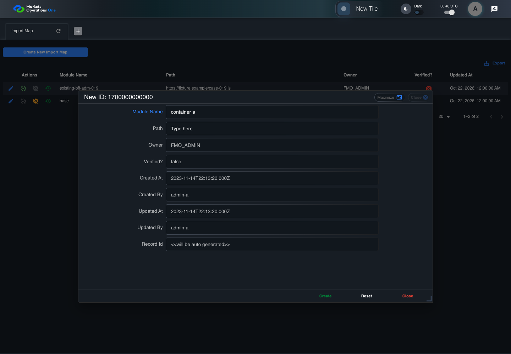
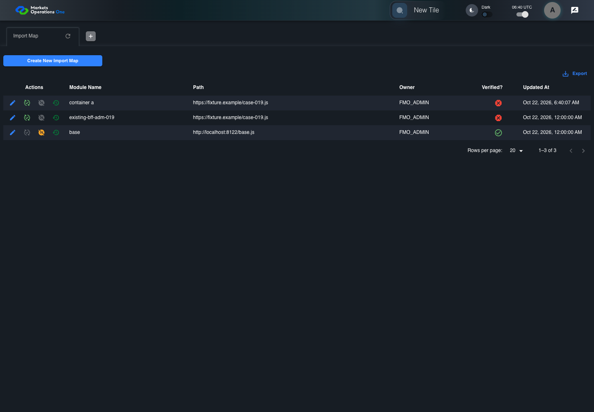

BFF-ADM-019 current BFF administration through actual UI
FAIL · application/run-072/bff-adm-019-current-bff-administration-through-actual-ui-169be6fd749c-attempt-1 · ACTUAL_APPLICATION_LOCAL_SERVICES
Actual current React and exact-current BFF admin controllers/services/JPA with actual migration DDL in disposable PostgreSQL. Controlled OUD/EMS2 identities and local Spring bootstrap. Fixture SQL seeds/mutates isolated records; service errors are actual database errors. Undefined agreed messages remain unresolved acceptance.
2026-10-22T06:40:03.701Z to 2026-10-22T06:40:13.237Z
Assertions and result · Artifact manifest · Exact run inputs and source hashes
Result SHA-256:27f768f6293a9c48b81957114b4802eec8102065426d1d63cc858d24838d2063Retained failure details
[
{
"message": "Error: \u001b[2mexpect(\u001b[22m\u001b[31mlocator\u001b[39m\u001b[2m).\u001b[22mtoBeVisible\u001b[2m(\u001b[22m\u001b[2m)\u001b[22m failed\n\nLocator: locator('[role=\"tabpanel\"]:visible').locator('[role=\"dialog\"]').filter({ has: getByText(/^(?:new|edit|verify|deactivate) ID:/) })\nExpected: visible\nTimeout: 5000ms\nError: element(s) not found\n\nCall log:\n\u001b[2m - Expect \"toBeVisible\" locator('[role=\"tabpanel\"]:visible').locator('[role=\"dialog\"]').filter({ has: getByText(/^(?:new|edit|verify|deactivate) ID:/) }) with timeout 5000ms\u001b[22m\n\u001b[2m - waiting for locator('[role=\"tabpanel\"]:visible').locator('[role=\"dialog\"]').filter({ has: getByText(/^(?:new|edit|verify|deactivate) ID:/) })\u001b[22m\n",
"stack": "Error: \u001b[2mexpect(\u001b[22m\u001b[31mlocator\u001b[39m\u001b[2m).\u001b[22mtoBeVisible\u001b[2m(\u001b[22m\u001b[2m)\u001b[22m failed\n\nLocator: locator('[role=\"tabpanel\"]:visible').locator('[role=\"dialog\"]').filter({ has: getByText(/^(?:new|edit|verify|deactivate) ID:/) })\nExpected: visible\nTimeout: 5000ms\nError: element(s) not found\n\nCall log:\n\u001b[2m - Expect \"toBeVisible\" locator('[role=\"tabpanel\"]:visible').locator('[role=\"dialog\"]').filter({ has: getByText(/^(?:new|edit|verify|deactivate) ID:/) }) with timeout 5000ms\u001b[22m\n\u001b[2m - waiting for locator('[role=\"tabpanel\"]:visible').locator('[role=\"dialog\"]').filter({ has: getByText(/^(?:new|edit|verify|deactivate) ID:/) })\u001b[22m\n\n at /Users/lushevol/code/github/ratan-release-impact/workbench/e2e/audit-specs/bff-admin.spec.ts:43:117\n at AuditCapture.step (/Users/lushevol/code/github/ratan-release-impact/workbench/e2e/support/audit-fixture.ts:94:21)\n at /Users/lushevol/code/github/ratan-release-impact/workbench/e2e/audit-specs/bff-admin.spec.ts:18:27",
"location": {
"file": "/Users/lushevol/code/github/ratan-release-impact/workbench/e2e/audit-specs/bff-admin.spec.ts",
"column": 117,
"line": 43
},
"snippet": " 41 | if(text.startsWith('the next BFF repository save')){await app.fixture('seed',{failure:`${app.resource}-save`});return;}\n 42 | if((match=/^Admin [ABCS] clicks the button labeled \"([^\"]+)\"/.exec(text))){if(match[1].startsWith('Create New')){const nativeNow=Date.now();if(creationClock)await page.clock.setFixedTime(new Date(1700000000000));await app.ui.panel.getByRole('button',{name:match[1],exact:true}).click();if(creationClock)await page.clock.setFixedTime(new Date(nativeNow));}else {const row= /row with \"Record Id\" \"(\\d+)\"/.exec(text)?.[1];if(row){await app.ui.reveal('actions',row);await app.ui.action(match[1],row).click();}else await app.clickFooter(match[1]);}return;}\n> 43 | if((match=/^the dialog titled \"([^\"]+)\" (is visible|remains visible)/.exec(text))){await expect(app.ui.dialog()).toBeVisible();await expect(app.ui.dialog()).toContainText(match[1]);return;}\n | ^\n 44 | if((match=/^Admin [ABCS] fills the (?:textbox|textarea) labeled \"([^\"]+)\" with exactly (\\d+) ASCII \"a\" characters/.exec(text))){await app.fill(match[1],'a'.repeat(Number(match[2])));return;}\n 45 | if((match=/^Admin [ABCS] fills the (?:textbox|textarea) labeled \"([^\"]+)\" with \"(.*)\" in dialog/.exec(text))){await app.fill(match[1],match[2].replaceAll('\\\\\"','\"').replaceAll('\\\\t','\\t'));return;}\n 46 | if((match=/^Admin [ABCS] clicks the combobox labeled \"([^\"]+)\"/.exec(text))){await app.ui.field(match[1],'combobox').click();return;}"
}
]Machine observations
- actual-identity-projection.json
17f740c10a0ca4f92a321e5a16b9dde683afe49b4df3161844a2cbae28c45ba1 - baseline-inputs.json
0fd6536cdcb236b2112078f6920ea63e15c50ceef124684731a13b0d08084e40 - bff-boundary.json
f6b86369520d42dbb09cecfe82be2c6d96863be6646775839af9891551923e64 - committed-ui-submission-comparisons.json
a007834b6fbc2398c4ee42a3492af5b751d4f70880c96119981d2e90e23d784f - creation-clock.json
e95b7cc51617186b1eda93e6ddcd04a45edbcb2046e4680495d9aaac8cbae1ae - fixture-step-4.json
e9590decb81c4184994ba2946d817fe969519859eb9d07ab17da70da55410d5d - fixture-step-5.json
1080493fffe14f4b970f64d11c7ade95336db89f17144d7b72773773157bb7f9 - initial-persisted-records.json
9a6da0b61e162410b352a40b9fbd66ee52e3b4bd047d5523a9dd0b44cff85b9e - persisted-after-submit.json
d389afbbde488fb225c0c65742ba0ff924e9f03358e288a564b1a94d1190e234 - ui-origin-bff-requests.json
6e97b416b92d324ad7d459697a8880169d408ed73714544de662a7445eda58d0
Screenshot capture: CAPTURED. Named frames: 12.
Step screenshot bindings: INCOMPLETE. 11/13 canonical steps have execution screenshots.
Bindings measure structural coverage only. They do not establish screenshot content quality or relevance.
Screenshot content review: NOT_REVIEWED. Recorded context: 0/12 frames. Identical image bytes: 6 repeated frames. Recorded context does not establish human visual review.
Step 12 has no screenshot from an executed step. Step 13 has no screenshot from an executed step.
Canonical step timeline
Given Admin A uses subject "admin-a" with role "FMO_ADMIN" in an isolated authenticated browser
Execution: PASSED.
1. step-01 Visible state after step 1: Given Admin A uses subject "admin-a" with role "FMO_ADMIN" in an isolated authenticated browser
2026-10-22T06:40:06.004Z · 1440×1000
Step: /Users/lushevol/code/github/ratan-release-impact/workbench/tasks/ui-test-coverage-20261022/test-cases.md:15456
SHA-256:f8205f65fae86a18cc5b1ebfe9377a593e6c97d5d865f956903fb5f1d9953274And the controlled Import Map fixture records the initial grid rows and persisted values
Execution: PASSED.
2. step-02 Visible state after step 2: And the controlled Import Map fixture records the initial grid rows and persisted values
2026-10-22T06:40:06.148Z · 1440×1000
Step: /Users/lushevol/code/github/ratan-release-impact/workbench/tasks/ui-test-coverage-20261022/test-cases.md:15457
SHA-256:f8205f65fae86a18cc5b1ebfe9377a593e6c97d5d865f956903fb5f1d9953274Image bytes match frame 1. An unchanged image can be valid for consecutive assertions. This match does not establish correct step content.
And the controlled creation clock returns 1700000000000 milliseconds
Execution: PASSED.3. step-03 Visible state after step 3: And the controlled creation clock returns 1700000000000 milliseconds
2026-10-22T06:40:06.199Z · 1440×1000
Step: /Users/lushevol/code/github/ratan-release-impact/workbench/tasks/ui-test-coverage-20261022/test-cases.md:15458
SHA-256:f8205f65fae86a18cc5b1ebfe9377a593e6c97d5d865f956903fb5f1d9953274Image bytes match frame 2. An unchanged image can be valid for consecutive assertions. This match does not establish correct step content.
And the baseline fixture data defines "Module Name" as "container-019"
Execution: PASSED.
4. step-04 Visible state after step 4: And the baseline fixture data defines "Module Name" as "container-019"
2026-10-22T06:40:06.245Z · 1440×1000
Step: /Users/lushevol/code/github/ratan-release-impact/workbench/tasks/ui-test-coverage-20261022/test-cases.md:15459
SHA-256:f8205f65fae86a18cc5b1ebfe9377a593e6c97d5d865f956903fb5f1d9953274Image bytes match frame 3. An unchanged image can be valid for consecutive assertions. This match does not establish correct step content.
And the baseline fixture data defines "Path" as "https://fixture.example/case-019.js"
Execution: PASSED.
5. step-05 Visible state after step 5: And the baseline fixture data defines "Path" as "https://fixture.example/case-019.js"
2026-10-22T06:40:06.296Z · 1440×1000
Step: /Users/lushevol/code/github/ratan-release-impact/workbench/tasks/ui-test-coverage-20261022/test-cases.md:15460
SHA-256:f8205f65fae86a18cc5b1ebfe9377a593e6c97d5d865f956903fb5f1d9953274Image bytes match frame 4. An unchanged image can be valid for consecutive assertions. This match does not establish correct step content.
When Admin A clicks the button labeled "Create New Import Map" on the Import Map administration page
Execution: PASSED.6. step-06 Visible state after step 6: When Admin A clicks the button labeled "Create New Import Map" on the Import Map administration page
2026-10-22T06:40:06.518Z · 1440×1000
Step: /Users/lushevol/code/github/ratan-release-impact/workbench/tasks/ui-test-coverage-20261022/test-cases.md:15461
SHA-256:6d4f8c6bac6ac9e2fd4fd2d543c98d7dba386512883a6edcea438df6a855eb9dThen the dialog titled "new ID: 1700000000000" is visible on the Import Map administration page
Execution: PASSED.7. step-07 Visible state after step 7: Then the dialog titled "new ID: 1700000000000" is visible on the Import Map administration page
2026-10-22T06:40:06.591Z · 1440×1000
Step: /Users/lushevol/code/github/ratan-release-impact/workbench/tasks/ui-test-coverage-20261022/test-cases.md:15462
SHA-256:36a012a49754e16d253f6499e60828d42843f174525cf0494d601b91a74bf4d6When Admin A fills the textbox labeled "Module Name" with "container\ta" in dialog "new ID: 1700000000000"
Execution: PASSED.
8. step-08 Visible state after step 8: When Admin A fills the textbox labeled "Module Name" with "container\ta" in dialog "new ID: 1700000000000"
2026-10-22T06:40:07.014Z · 1440×1000
Step: /Users/lushevol/code/github/ratan-release-impact/workbench/tasks/ui-test-coverage-20261022/test-cases.md:15463
SHA-256:4fb3329841cef4d4913471b8a5149eaa3ff46c4ec96a7f112d8d54a783fca6b0And Admin A fills the textbox labeled "Path" with "https://fixture.example/case-019.js" in dialog "new ID: 1700000000000"
Execution: PASSED.9. step-09 Visible state after step 9: And Admin A fills the textbox labeled "Path" with "https://fixture.example/case-019.js" in dialog "new ID: 1700000000000"
2026-10-22T06:40:07.434Z · 1440×1000
Step: /Users/lushevol/code/github/ratan-release-impact/workbench/tasks/ui-test-coverage-20261022/test-cases.md:15464
SHA-256:829aa4c786ec55166b2394a7c622791392a8e4e9f627da908d507c4ac86efdf0And Admin A clicks the button labeled "Create" in dialog "new ID: 1700000000000"
Execution: PASSED.
10. step-10 Visible state after step 10: And Admin A clicks the button labeled "Create" in dialog "new ID: 1700000000000"
2026-10-22T06:40:07.656Z · 1440×1000
Step: /Users/lushevol/code/github/ratan-release-impact/workbench/tasks/ui-test-coverage-20261022/test-cases.md:15465
SHA-256:d9981480caefb833ebe3920554bf1857d9c15b207499113ba5d2a70e20025390Then the dialog titled "new ID: 1700000000000" remains visible on the Import Map administration page
Execution: FAILED.
11. step-11-failure Visible state when step 11 failed. Later steps did not execute.
2026-10-22T06:40:12.756Z · 1440×1000
Step: /Users/lushevol/code/github/ratan-release-impact/workbench/tasks/ui-test-coverage-20261022/test-cases.md:15466
SHA-256:d9981480caefb833ebe3920554bf1857d9c15b207499113ba5d2a70e20025390Image bytes match frame 10. An unchanged image can be valid for consecutive assertions. This match does not establish correct step content.
And the alert with severity "error" in the portal snackbar displays the agreed message for a field validation error identifies the unsafe whitespace
Execution: NOT_EXECUTED.No screenshot is recorded for this step. No executed state is claimed.
And the Import Map data grid with column "Record Id" row identifiers and loaded field values equal the initial grid snapshot on the Import Map administration page
Execution: NOT_EXECUTED.No screenshot is recorded for this step. No executed state is claimed.
Additional named frames

The visible state when the test failed.
2026-10-22T06:40:12.854Z · 1440×1000Step: Test source: /Users/lushevol/code/github/ratan-release-impact/workbench/e2e/audit-specs/bff-admin.spec.ts:11
SHA-256:
d9981480caefb833ebe3920554bf1857d9c15b207499113ba5d2a70e20025390Image bytes match frame 11. An unchanged image can be valid for consecutive assertions. This match does not establish correct step content.
Screenshots establish visible state only. Assertions and traces support functional claims.